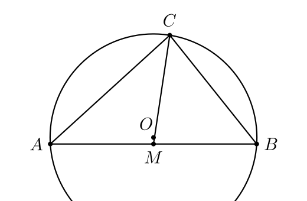
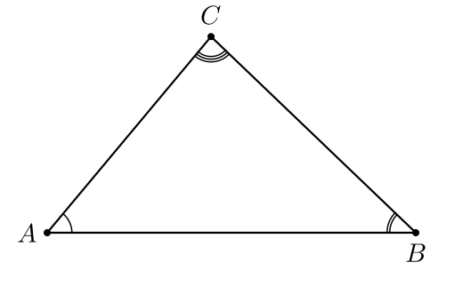
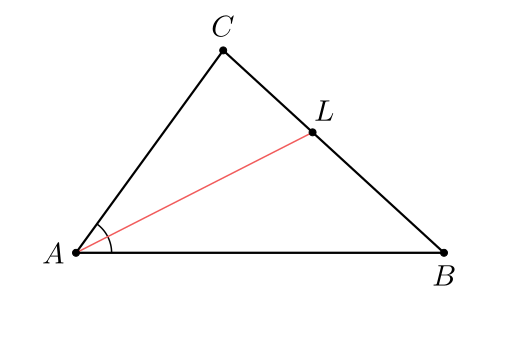

§3 · Python-DSL
DSL — маленький язык поверх Python: те же правила синтаксиса (имена,
выражения, арифметика, комментарии), но зарезервированные имена —
геометрические. Point возвращает точку, Polygon —
кортеж, Intersect делает то, что написано. Вы пишете
конструкцию, а AnimaGeo превращает её в граф зависимостей, который
пересобирается при анимации.
Обзор
Любая AnimaGeo-сцена строится из элементов. В DSL каждому элементу
соответствует имя (идентификатор) — AnimaGeo использует его и для
построения графа, и для доступа через scene.element('имя').
| Категория | Примеры имён | Что делает |
|---|---|---|
| Примитивы | Point, Segment, Line, Ray, Vector, Circle, Polygon, Angle | Создают базовые геометрические объекты. |
| Конструкции | Midpoint, Intersect, OrthogonalLine, AngularBisector, LineBisector, Center, Centroid, Tangent, Touches, Mirror, Rotate | Строят новый объект из уже существующих. |
| Измерения | Distance, Area, AngleMeasure | Возвращают Measure — число с единицами. |
| Кривые | Conic, Function, ImplicitCurve, Ellipse, Parabola, Hyperbola | Подробно в §7. |
| Переменные | Measure, AngleSize, Boolean | Анимируемые значения (см. §8). |
Point(0,0) — валидно,
point(0,0) — не распознаётся. Внутри DSL — обычный Python: можно
писать x = -2.5, r = (a + b) / 2 или
for i in range(3): ..., и эти выражения будут выполнены как
ожидается.
- Inline —
scene.putCode(""" … """). Код едет строкой, работает полный DSL-transform: LHS-имена попадают вConstruction, повтор в цикле даётp, p_2, p_3…, поддержан сахарf(x) = x^2. - From file —
scene.loadCode('scene.ag.py'). Тот же движок, просто DSL живёт в отдельном файле. Расширение.ag.py— чтобы IDE подсвечивала как Python и подхватывала стабы<ggb>_stubs.pyi, которые пишетloadGGB. - Pure Python —
with dsl.scope(self.geo): …. AST-transform не запускается; фабрики вызываются как обычные функции. IDE-autocomplete работает из коробки, но за имена в графе отвечаете вы сами — передавайтеname='A'явно. Loop-scope уникализации тоже нет: повтор имени = коллизия.
Во всех трёх вариантах получается один и
тот же Construction и, как следствие, одна и та же
картинка. Переключайте вкладки в Scaffold, чтобы увидеть ту же
DSL-логику в трёх Python-обвязках.
Точки
Точка — атом. Всё остальное строится от точек. В DSL есть два основных способа их создать:
| Вызов | Смысл |
|---|---|
Point(x, y) | Свободная точка с заданными координатами сцены. |
Point(circle) + elem.tparam = θ | Точка на окружности, параметр tparam — угол в радианах. Анимируется через update_tparam. |
Point(segment) + elem.tparam = t | Точка на сегменте, tparam — линейный параметр (0..1 для внутренней). Анимируется. |
Midpoint(A, B) | Середина отрезка AB. |
Intersect(g1, g2) | Пересечение (линии, окружности, кривые — любые пары). Возвращает точку или список точек. |
Center(Circle(A, B, C)) | Центр описанной окружности треугольника ABC. |
Centroid(A, B, C) | Центроид треугольника (точка пересечения медиан). |
Incenter(A, B, C) | Центр вписанной окружности. |
.tparam — curve/locus parameter для точки, закреплённой на локусе. Для окружности это угол в радианах, для сегмента/прямой/луча — линейный параметр t.
Точки можно складывать и умножать на число — удобно для небольших конструкций без явного создания промежуточных элементов:
L = A + (B - A) * 0.3 # точка на 30% пути от A к B
E = Centroid + (A - Centroid) * 1.2 # «продлить» медиану на 20%A = Point(-3.8, -1.6)
B = Point(3.8, -1.6)
C = Point(0.6, 2.4)
p, a, b, c = Polygon(A, B, C)
M = Midpoint(A, B) # середина
G = Centroid(A, B, C) # центроид
O = Center(Circle(A, B, C)) # описанная окружность
med = Segment(C, M) # медиана из C
k = Circle(O, A) # описанная окружность
style(A, B, C, M, G, O, label_visible=True)
Линии, сегменты, лучи, векторы
Четыре примитива отличаются тем, как рендерятся и участвуют в пересечениях:
| Примитив | DSL | Рендер | Используется для |
|---|---|---|---|
| Line | Line(P, Q) или Line(P, direction_vector) | Прямая, обрезанная viewport'ом | Бесконечные построения: биссектрисы, перпендикуляры, касательные-прямые. |
| Segment | Segment(A, B) | Отрезок от A до B | Стороны полигонов, сегменты-подписи (AM = MB). |
| Ray | Ray(origin, direction_point) | Луч из origin через direction_point, обрезан viewport'ом | Биссектрисы-лучи, направления света/зрения. |
| Vector | Vector(tail, head) | Стрелка от tail до head | Векторы в физике/алгебре, направления сил. |
Line и Ray
всегда тянутся до края, Segment — строго между концов.
Intersect тоже ведёт себя по-разному: пересечение
Line×Line всегда в одной точке (если не параллельны),
Segment×Segment — только если реально пересекаются в
границах.
Стили штрихов и меток равенства
У сегментов есть elem.style['tick_count']: 1, 2 или 3 штриха
поперёк — классическая школьная нотация «эти стороны равны». Плюс
'tick_style': 'wave' даёт волнистые штрихи вместо прямых.
A = Point(-3, 0)
B = Point(3, 0)
M = Midpoint(A, B)
s1 = Segment(A, M)
s2 = Segment(M, B)
# overrides снаружи добавляют равные штрихи (lines=2)
# попробуйте убрать — иллюстрация потеряет метки равенства
style(A, B, M, label_visible=True)
s1.style.tick_count = 2
s2.style.tick_count = 2Углы
Угол в AnimaGeo — не просто число, а объект. У него есть вершина, две стороны и дуга, которую можно стилизовать:
Angle(P, V, Q) # угол при вершине V, от луча VP до луча VQПорядок аргументов определяет направление дуги — это важно для ориентированных (CCW) полигонов.
Angle(A, B, C) для
внутреннего угла при B — правильный порядок. Если поменять местами
A и C, получите >180°-дугу. При заливке
fill это заметнее всего: half-plane вывернется наизнанку.
У углов есть несколько ключей стиля, специфичных именно для углов:
| Ключ | Что делает |
|---|---|
tick_count | 1, 2 или 3 концентрических дуги — показать, что углы равны. arc_shift_px между дугами задаётся в стиле. |
arc_size_px | Радиус внешней дуги в пикселях (pixel-invariant). |
fill / fill_opacity | Заливка сектора. |
label_text | TeX или Unicode-строка, напр. $\alpha$, $60°$, $\frac{\pi}{3}$. |
Прямой угол визуализируется автоматически — если Angle(A, B, C)
на момент построения равен 90°, рисуется квадратик вместо дуги.
A = Point(-4.5, -2)
B = Point(4.5, -2)
C = Point(-0.5, 2.8)
p, a, b, c = Polygon(A, B, C)
alpha = Angle(B, A, C) # при A
beta = Angle(C, B, A) # при B
gamma = Angle(A, C, B) # при C
# overrides: lines 1/2/3 — стандартная школьная нотация
style(A, B, C, label_visible=True)
alpha.style.label_text = r'$\alpha$'
beta.style.label_text = r'$\beta$'
gamma.style.label_text = r'$\gamma$'
alpha.style.tick_count = 1
beta.style.tick_count = 2
gamma.style.tick_count = 3
Окружности, дуги, секторы
| DSL | Что |
|---|---|
Circle(center, passing_point) | Окружность с центром center, проходящая через passing_point. |
Circle(center, r) | Окружность радиуса r (число или Measure). |
Circle(A, B, C) | Окружность через три точки (= описанная для треугольника). |
CircleArc(center, A, B) | Дуга окружности от A до B (CCW). |
CircleSector(center, A, B) | Сектор (дуга + два радиуса). |
CircumcircleArc(A, B, C) | Дуга описанной окружности, проходящая через A → B → C. |
O = Point(0, 0)
R = Point(2.5, 0)
c = Circle(O, R)
# две точки на окружности и дуга между ними
P = Point(-1.9, 1.6)
Q = Point(1.9, 1.6)
arc1 = CircleArc(O, Q, P)
style(O, R, P, Q, label_visible=True)
arc1.style.stroke = '#f15b5b'
arc1.style.stroke_width_px = 2.5Полигоны
Polygon(P1, P2, ..., Pn) возвращает кортеж:
сам полигон + его стороны, по порядку.
p, a, b, c = Polygon(A, B, C)
# p — полигон (для заливки)
# a = Segment(A, B), b = Segment(B, C), c = Segment(C, A)Для n-угольника кортеж имеет n+1 элемент: полигон и
n сторон (замыкающая идёт последней, от Pn к P1).
Сторону можно использовать как обычный сегмент, в том числе передавать
в Intersect:
A = Point(-4, -1.5); B = Point(4, -1.5); C = Point(0, 2.5)
p, sAB, sBC, sCA = Polygon(A, B, C)
M = Intersect(AngularBisector(B, A, C), sBC) # M ∈ BCp.style['fill_opacity'] = 0. Если только заливка — скройте
стороны через a.visible = False; b.visible = False; ....
Конструирующие команды
Шесть самых частых команд — основа любой школьной геометрии. Каждая принимает существующие точки/линии и возвращает новый объект.
| Команда | Сигнатура | Возвращает |
|---|---|---|
| Середина | Midpoint(A, B) или Midpoint(segment) | Точка |
| Пересечение | Intersect(g1, g2) | Точка (или список, если их несколько — см. ниже) |
| Перпендикуляр | PerpendicularLine(P, l) | Прямая через P перпендикулярно l |
| Параллельная | ParallelLine(P, l) | Прямая через P параллельно l |
| Биссектриса угла | AngularBisector(P, V, Q) | Луч из V, делящий угол PVQ пополам |
| Серединный перпендикуляр | PerpendicularBisector(A, B) | Прямая |
| Касательная | Tangent(P, circle) | Пара прямых (или пустой список, если P внутри) |
Несколько пересечений
Intersect для «линия × окружность» даёт две точки. Если
нужна конкретная — можно передать индекс: публичный DSL использует
нумерацию 1, 2, ... и принимает как позиционный аргумент, так и
index=.
P1 = Intersect(line, circle, index=1) # первая точка
P2 = Intersect(line, circle, 2) # втораяБез индекса Intersect отдаёт объект-контейнер; обычно
удобнее деструктуризовать:
P1, P2 = Intersect(line, circle)Порядок пересечений является частью публичного контракта:
P1, P2 = Intersect(a, b) соответствует
Intersect(a, b, index=1) и
Intersect(a, b, index=2). Для окружностей AnimaGeo сохраняет
GeoGebra-like эвристику: если точки пересечения уже участвовали во входных
объектах окружности или второго объекта, они идут первыми в этом порядке;
оставшиеся точки сохраняют внутренний детерминированный порядок. Один и тот
же порядок используется в Python DSL, .ggb import и
экспортных путях.
Составной пример: биссектриса и её пересечение со стороной
A = Point(-4, -1.8)
B = Point(4, -1.8)
C = Point(-0.8, 2.6)
p, a, b, c = Polygon(A, B, C)
# биссектриса угла A — прямая через f
f = AngularBisector(C, A, B)
# точка, где она пересекает противолежащую сторону BC
L = Intersect(f, b)
# видимый сегмент A→L (биссектриса как отрезок)
bis = Segment(A, L)
# два полууглa при A (для равных дуг)
beta = Angle(C, A, L)
gamma = Angle(L, A, B)
hide(f)
style(A, B, C, L, label_visible=True)
beta.style.label_text = r'$\beta$'
gamma.style.label_text = r'$\gamma$'
bis.style.stroke = '#f15b5b'
bis.style.stroke_width_px = 1.5
Переменные и измерения
Три типа «переменной» — это числовые значения, которые можно анимировать, привязывать к построениям и показывать как подписи.
| Тип | Создание | Применение |
|---|---|---|
Measure | d = Distance(A, B), s = Area(p) | Длины, площади. Автоматически пересчитывается при изменении точек. |
AngleSize | x = AngleMeasure(B, A, C) | Размер угла (в радианах). Можно использовать в If, сравнениях. |
Boolean | b = Boolean(True), условия на сцене | Управление видимостью (см. §8, keyframes). |
Любой Measure можно показать как подпись — либо рядом с
элементом, от которого измерение получено, либо в отдельной точке:
A = Point(-3, 0); B = Point(3, 0)
s = Segment(A, B)
d = Distance(A, B) # Measure
s.style['label_visible'] = True
s.style['label_text'] = f'{d:.1f}' # «6.0»d — живое: при движении A или
B подпись обновляется автоматически. Для живой подписи
используйте строку с плейсхолдером {measure} —
подробно в §6.
k = 2, затем f(x) = k x^2 (знак * можно опустить).
Формула хранит ссылку на k и пересчитывается при его изменении;
x(A), y(A) — координаты точки, логическое значение
(b = AreCollinear(A, B, C)) работает в If(b, x, -x).
Уравнение прямой — тоже формула: Line("y = k x + 1"). π и
ℯ пишутся как есть: f(x) = sin(πx). Подробности синтаксиса — в §7.
Доступ из Python
После putCode(...) все имена из DSL живут в Construction.
Доступ через scene.element(name) или напрямую через
scene.geo.elements. Стили можно писать как через
style[...], так и атрибутом style.X
(StyleProxy поддерживает оба варианта).
scene.putCode("""
A = Point(-3, 0)
B = Point(3, 0)
s = Segment(A, B)
""")
s_obj = scene.element('s')
s_obj.style.stroke = '#f15b5b' # атрибутный стиль
s_obj.style['stroke_width_px'] = 2.5 # dict-совместимый
s_obj.style.label_visible = True
s_obj.style.label_text = 'AB'
# или скрыть элемент полностью:
a_obj = scene.element('A')
a_obj.visible = False
# Прямой доступ к геометрическим полям
s_obj.start, s_obj.end, s_obj.length # через Segment
a_obj.x, a_obj.y, a_obj.coords # через PointВнутри DSL (в коде, переданном в putCode) доступ к полям
выглядит также: A.x, circ.center, seg.length
и т. д. Полный список человечных имён полей — в
docs/field_names.md.
.a, .c,
.n, .r, .M, .b,
.x у Measure, .alpha,
.angle) полностью заменены на человечные
(.coords, .center/.offset, .normal,
.radius, .matrix, .value,
.tparam, .size). Backward-compat алиасы
удалены — старый код получает AttributeError.
Python-like DSL: control flow без unrestricted runtime
exec-движок исполняет DSL-строку как Python: for,
if, def, **kwargs, comprehensions,
f-строки, tuple-unpack — всё работает.
global, nonlocal, +=, walrus
:=, chained assignment и annotated assignment с value запрещены.
В runtime недоступны open, eval, exec,
__import__. Lowercase unknown name создаёт forward-ref
Var(None), а CamelCase-опечатки должны падать как ошибка.
self.putCode("""
# Цикл создаёт p, p_2, p_3 (авто-уникализация имён)
for i in range(3):
p = Point(i, 0)
# Функция с explicit names через kwarg
def triangle(prefix, side):
A = Point(0, 0, name=f'{prefix}_A')
B = Point(side, 0, name=f'{prefix}_B')
C = Point(side/2, side*0.866, name=f'{prefix}_C')
return A, B, C
triangle('t1', 3)
triangle('t2', 5)
# Арифметика на прокси (регистрирует Add/Sub/Mult-команды)
D = A + B # Add(A, B)
v = B - A # Sub(B, A)
E = 2 * A # Mult(2, A)
""")Полный гайд по возможностям DSL — docs/python_dsl.md.
Dispatch convention
Под капотом каждая DSL-команда становится вызовом функции
name_shortcut, где shortcut — конкатенация
однобуквенных кодов типов аргументов. AnimaGeo выбирает конкретную
реализацию по фактическим типам переданных аргументов.
| Код | Тип |
|---|---|
p | Point |
l | Line |
s | Segment |
r | Ray |
c | Circle |
C | Arc |
a | Angle |
P | Polygon |
v | Vector |
i | int/float |
m | Measure |
K | Conic |
F | Function |
I | ImplicitCurve |
T | строка (DSL-литерал, для Conic("..."), Line("...")) |
Например, Midpoint(A, B) → midpoint_pp,
Intersect(l, c) → intersect_lc,
Circle(O, r) → circle_pi (если r — число),
Circle(O, P) → circle_pp (если P — точка).
Весь список реализаций — в animageo/geo/lib_commands.py.
Там 150+ функций; знать их не обязательно — DSL-уровня достаточно
для всех школьных задач.
GoldenRatio(A, B) —
достаточно написать golden_ratio_pp(p1, p2) в
lib_commands.py и перезапустить скрипт. Диспетчер подхватит
новую функцию автоматически; никаких регистраций не требуется.